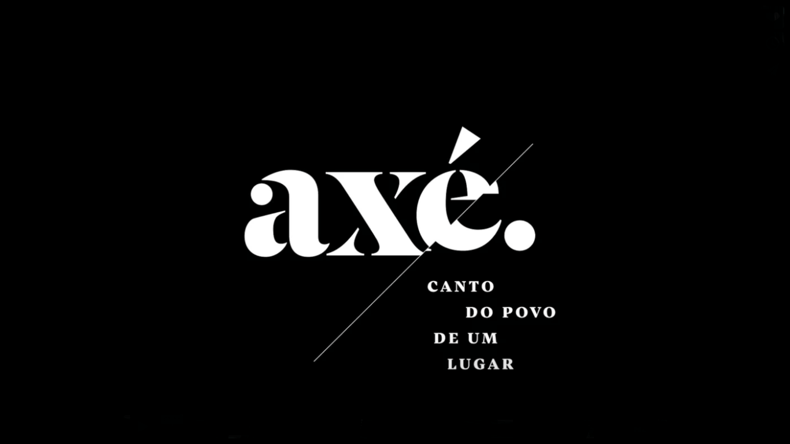

-
Curta o melhor do Axé
-
O axé, ou axé music, é um gênero musical que surgiu no estado da Bahia na década de 1980 durante as manifestações populares do Carnaval de Salvador, misturando o ijexá, samba-reggae, frevo, reggae, merengue, forró, samba duro, ritmos do candomblé, pop rock, bem como outros ritmos afro-brasileiros e afro-latinos.